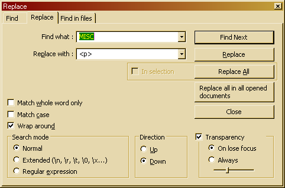

The Replace dialog is a supplement to the Find dialog. All the same rules still apply, but now you can replace the found text with some other text., or nothing if you want to remove it.
The most important change is that the Selection only checkbox now applies to the Replace All operation. will replace all occurrences of the query with the replacement text. will perform a Replace All operation on all the documents that are currently opened in Notepad++. Likewise, performs a replacement across all files of a certain type(s) in a folder; it is available from the Find in files dialog, and uses all its applicable options.